AVATAR REVIEW · 169Four eyes and clothing refinements
Keep the 168 Original eyes or explore three new shapes. Compare the softer shoulder contours, deeper tank armholes and rebuilt hoodies with 168.
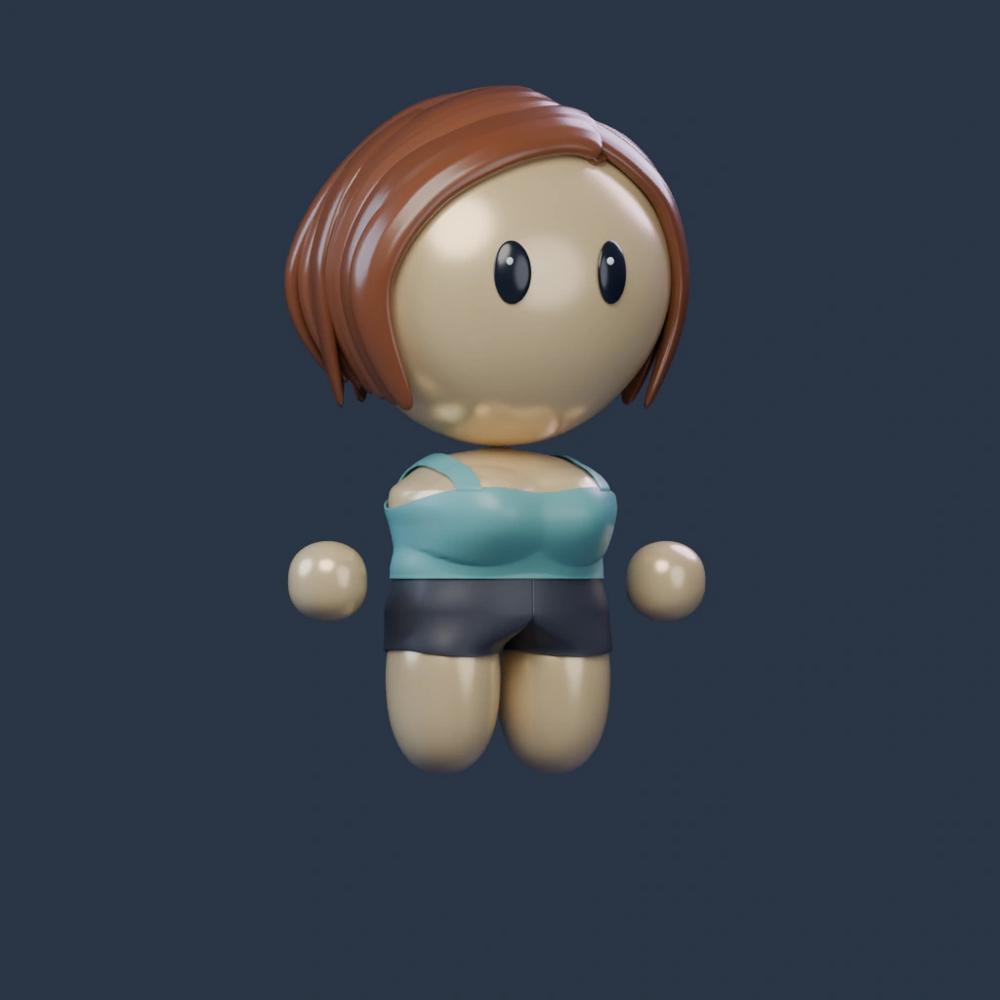
Blender render · Light warmRendered view. Load 3D to rotate and zoom. Changing eyes or skin also loads 3D.
Eye shapes
Original remains exact. All four use dark shapes and restrained highlights. Select an example for face focus.
Feminine
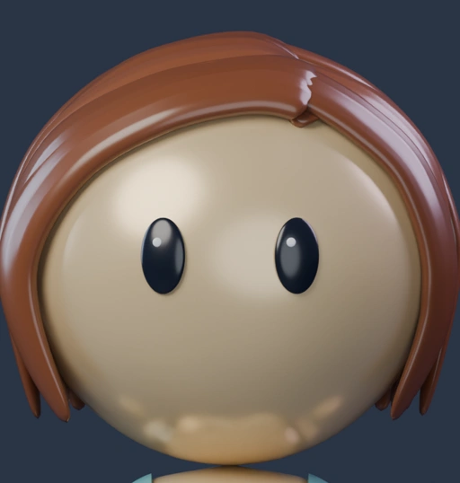
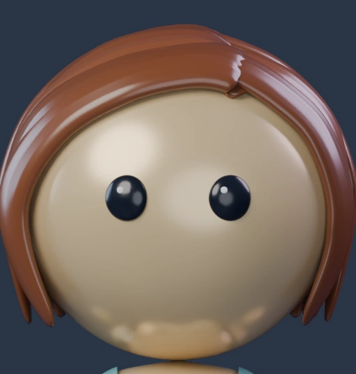
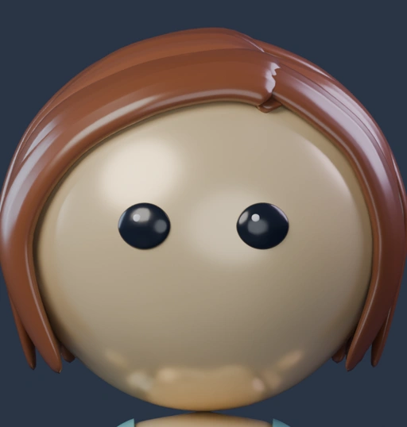
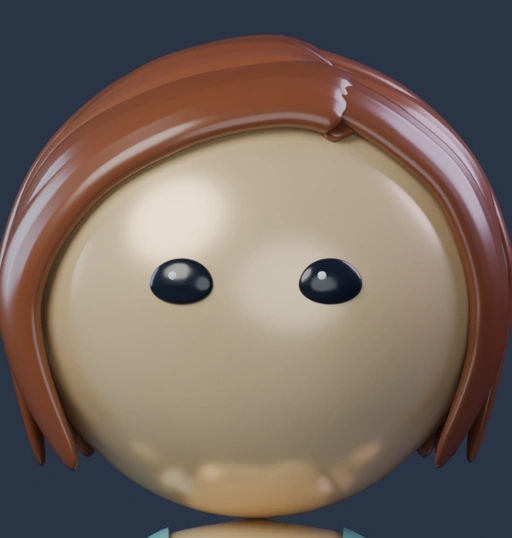
Masculine
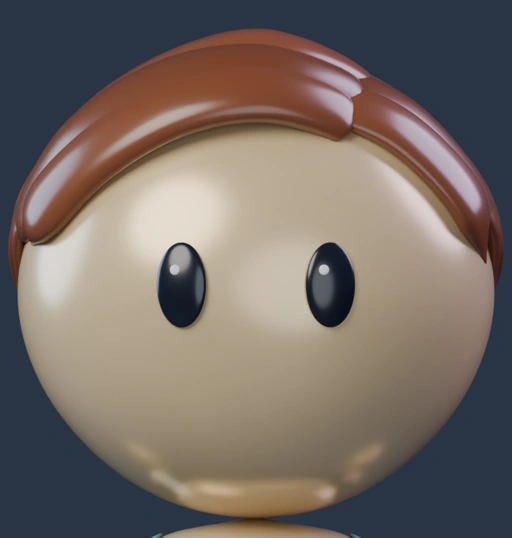
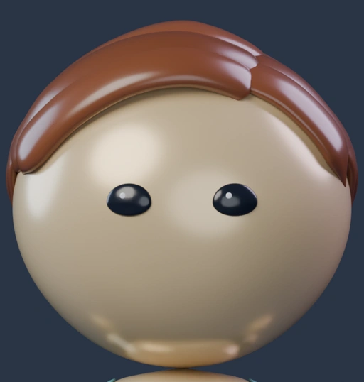
Clothing and shoulder review
The head shapes, hair, skin palette, chest, hands, legs and shorts are preserved. The shoulder roll is localized to the upper outer torso. Tank openings extend slightly farther downward; hoodies have a folded hood, clearer cords, pocket and ribbed borders.
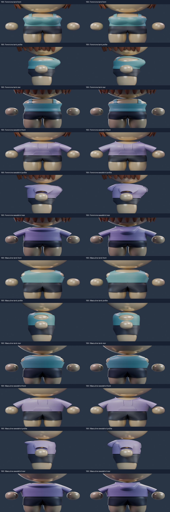
All outfits · six angles
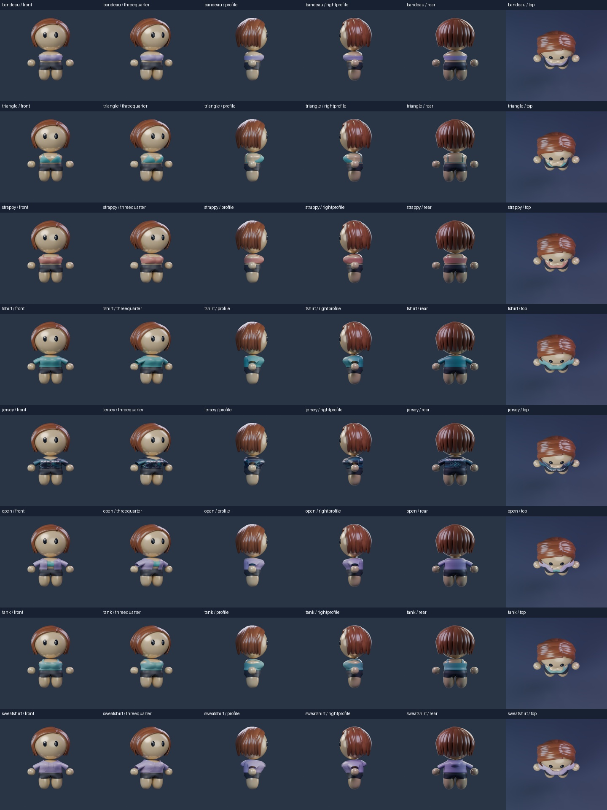
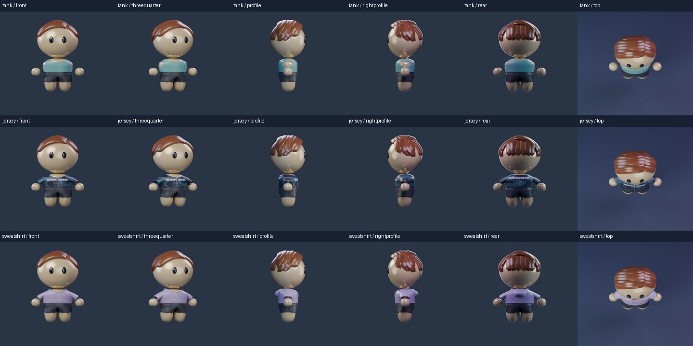
Necklines, armholes, sleeves and hood closeups
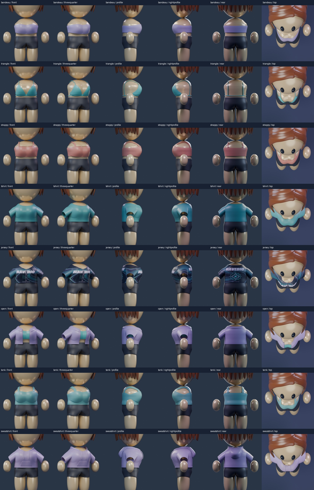
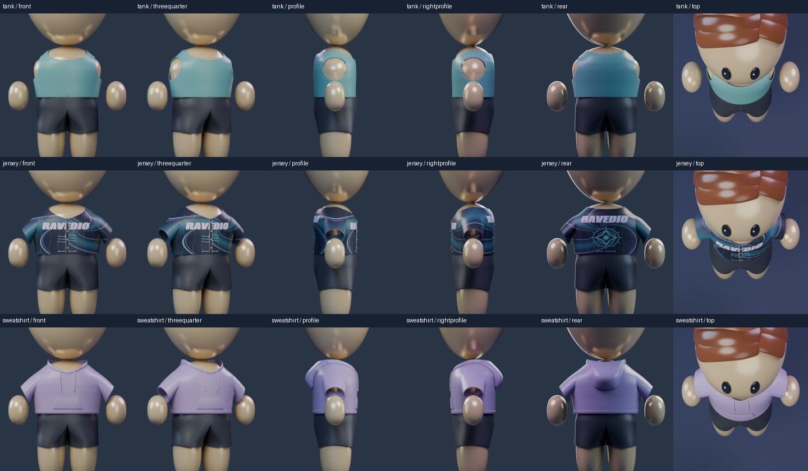
Eyes at chat sizes · 32, 48, 64 and 128 pixels
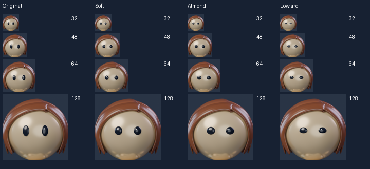
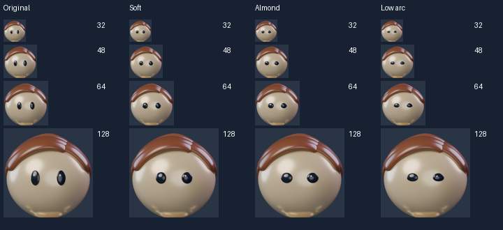
Asset files and review scope
Native Blender candidates with matched Cycles renders and modular GLBs. Eleven displayed outfits and all eight eye/build pairings reviewed. Browser lighting approximates the native renders. Full hair/headwear/accessory catalogue and physical phone performance remain separate. Original human master and Avatar Studio are unchanged; no deployed profile contract changed.
Revised base, eyes and top are separate components. Native art remains available in the local refinement169 checkpoint.